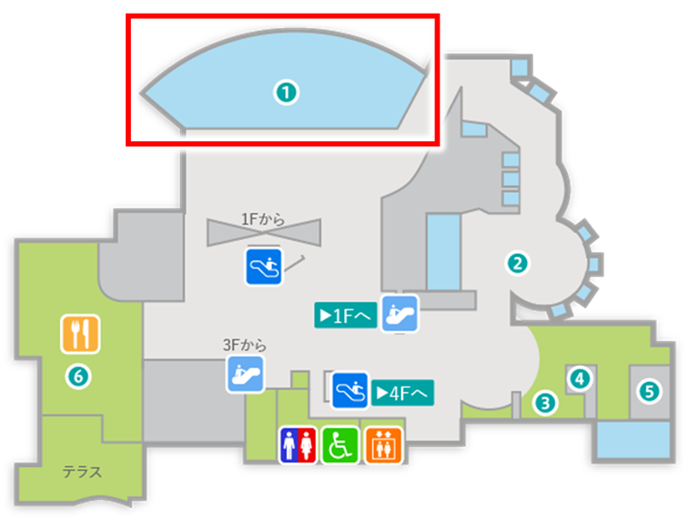

キハダは全長2m、体重200kgに達する中型のマグロで、背ビレと尾ビレが鮮やかな黄色で、そこから「黄肌」という名前がつきました。
熱帯性のマグロの仲間で、クロマグロのように津軽海峡を越えて北海道沖合まで回遊することはありません。鹿児島県では主に奄美群島などの離島で漁獲され、マグロ類の中では最も多く水揚げされています。
とにかく元気！水槽の中でも泳ぎっぱなし。目が合うと“もっと速く泳げるぞ”って自慢してくるような、そんな魚です。
（飼育員 ゆうか）
太平洋やインド洋などの温暖な海に広く分布しています。日本では主に小笠原諸島、沖縄周辺、鹿児島県では主に奄美群島などの離島で漁獲されます。
Q1：キハダの名前の由来はどこから来ている？
Q2：キハダはどんな生活をしている魚でしょう？
キハダはお刺身やツナ缶の材料としても有名ですが、マグロの中では比較的あっさりした味わいで、ヘルシーな食材としても人気です。
かごしま水族館で最も大きな水槽で、水量は1500㎥です。ジンベエザメやマグロやカツオなど黒潮の流れに乗って回遊する魚を展示しています。
